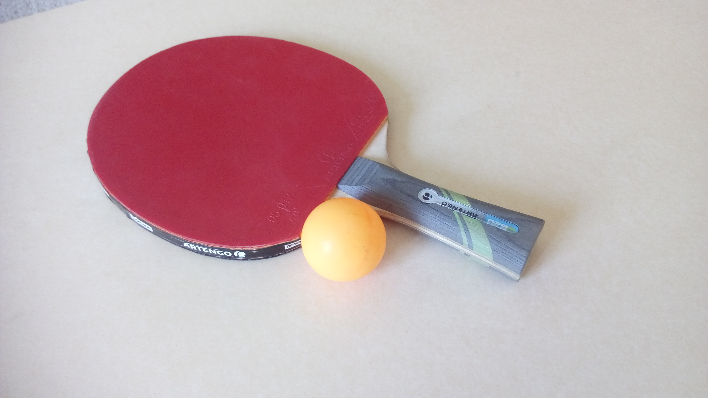
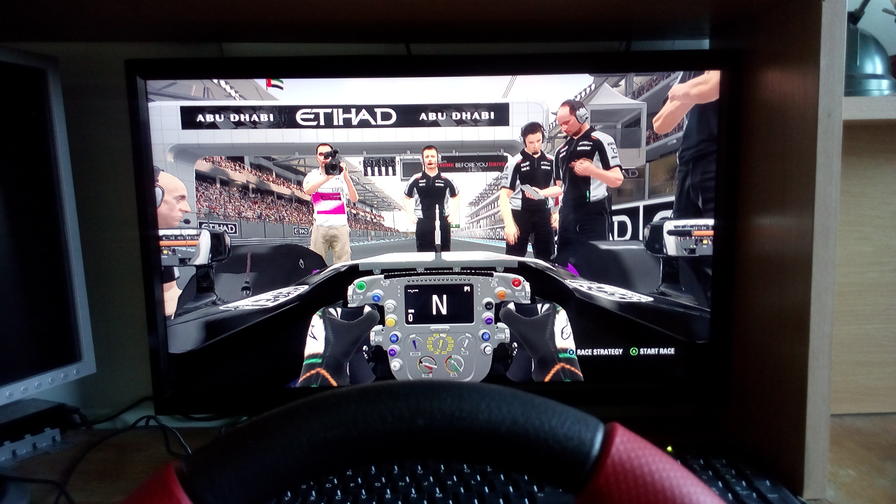
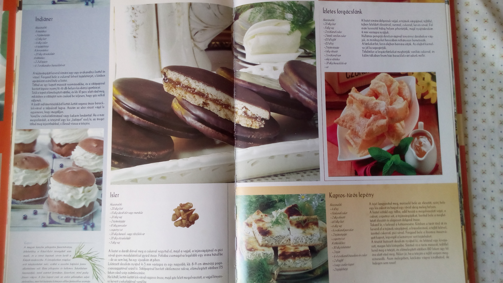

Főoldal |
Szabadidő |
Projektek |
Kapcsolat |
SPORTSzükségét érzem tanulás közben a folytotnos ülés miatt szünetet tartani, felállni az íróasztaltól, és elmenni kerékpározni, erősíteni, focizni, vagy csak ping-pongozni hogy kiszellőzteti a fejem. |
Ping-pong  |
| Játék videó  |
AUTÓSPORTGyerekkorom óta figyelemmel követem a hétvégi autósport közvetítéseket. Hétköznap ha nics lehetősem otthonról elmenni, egyszerűen csak indtok egy versenyt az F1 játékomon. Így növelem az esélyeimet egy baráti gokart verseny visszavágójára. |
FŐZÉSHasznos kikapcsolódásként gyakran sütök-főzök, akár több személyre. Leginkább a saját kelt tésztából és szószból készülő pizzát szeretem elkészíteni, ami pont megfelelő egy baráti összejövetelre. |
Receptes könyv  |